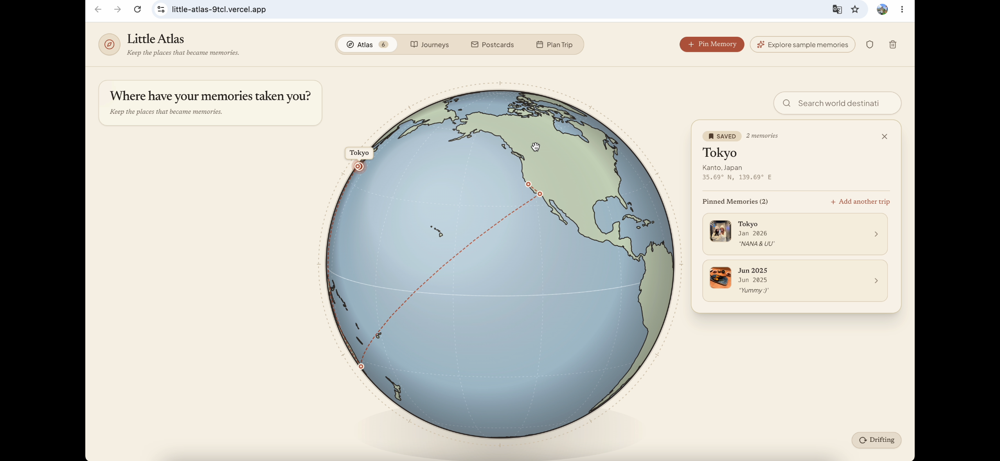
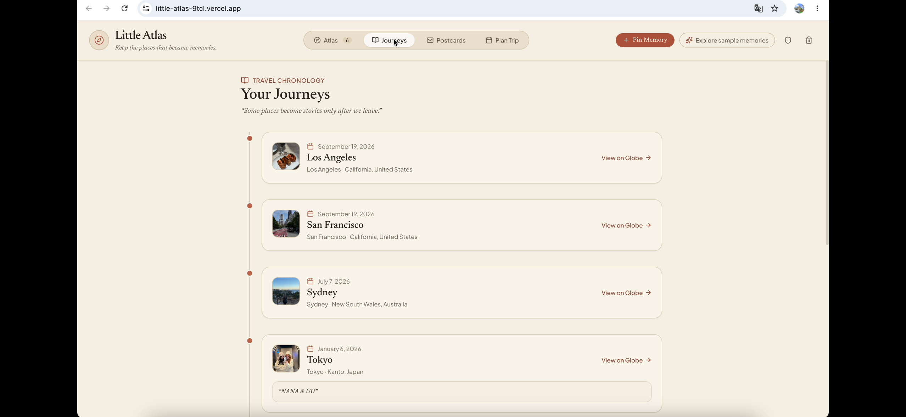
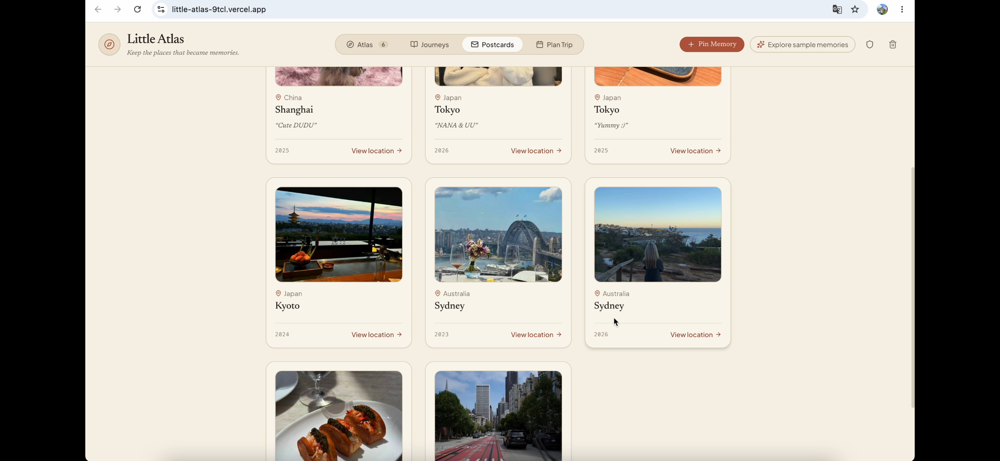
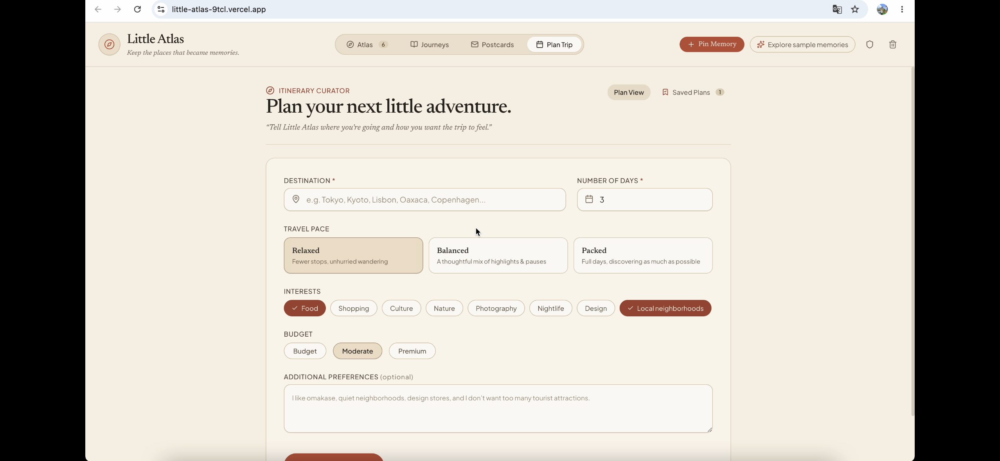
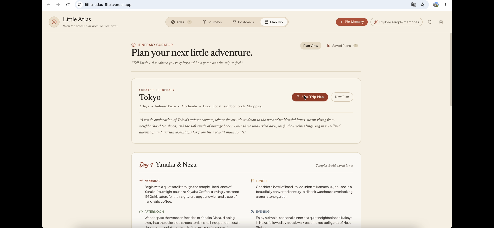
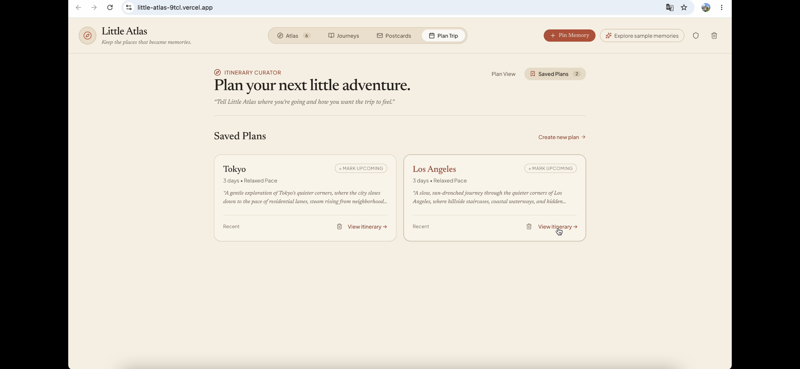

Photos from different visits to the same city can get mixed together, losing the dates and stories behind them. Little Atlas keeps each visit separate and connects its photos and notes through a globe and timeline. AI trip plans have their own space.
My roleProduct concept & interface design AI-assisted web implementation & iteration
ContextBerkeley MDes · MINI-ME coursework September 2026
OutcomeWorking web prototype Memory archive + AI trip planning

Atlas · Revisit a place and see the distinct memories attached to it.
01 / The idea
From scattered photos to a personal atlas.
I wanted to remember more than what a trip looked like. The archive keeps photos with the place, date and small notes that explain why they matter.
One city can hold several trips. Each visit needs its own photos and story without creating another copy of the place.
I built this as a Berkeley MDes coursework project, using the prototype to work through the design as I went.
RememberChoose a place. Add photos, a date and a note.
RevisitExplore the globe or browse the journey timeline.
KeepCollect favorite moments as postcards.
PlanDescribe the next trip and refine an AI-generated itinerary.
02 / The experience
Save a trip. Revisit it. Plan another.
A place can hold more than one story.
Select a city on the globe to see its saved memories or add another visit.
The traveler chooses what to save: a place, photos, a date and a note.
Atlas · Two memories share one place, rather than becoming duplicate destinations.
Revisit the journey through time.
Journeys lists memories by date. “View on Globe” takes the traveler back to the same memory on the map.

Journeys · A chronological view complements the globe.
Make a moment something to keep.
Postcards turns saved photos and notes into keepsakes, still linked to their original places.

Postcards · Favorite moments become a visual collection.
Tell the planner how the trip should feel.
Before generating a trip, the planner asks where the traveler is going, for how long, and what pace, interests and budget to use.

Plan Trip · Explicit preferences guide the generated itinerary.

Generated itinerary · Review the daily suggestions, then save a plan or revise it through conversation.
After seeing a draft, the traveler can ask for changes in chat. The interface asks for unchanged days to be kept rather than starting the whole plan again.

Saved plans · Keep proposed journeys separate from memories of places already visited.
03 / Design decisions
One city. More than one story.
Building the prototype exposed a few things I had blurred together: a place, a visit and a future plan. Separating them led to the most useful changes.
A place is not a memory.
At first, I treated searched locations, saved places and memories as one object. That broke down when I tried to add another visit to the same city: it needed a new date and photos, not a duplicate city.
I separated places from memories. One location can now hold several visits; the Tokyo example shows two memories under one place.
Remember by place—or by time.
The early screen felt more like a dashboard than a travel archive. I removed extra cards and controls and gave the globe more room.
The globe lets people browse by place; Journeys lets them browse by date. Both use the same memory records.
Let AI suggest the next trip.
A past visit is someone’s own record. An AI itinerary is a suggestion. I kept them in separate flows so one would not be mistaken for the other.
The traveler sets preferences before generating a plan, then can request changes in chat. Saved plans stay outside the memory archive.
04 / Building the prototype
Design, build, try, revise.
I used AI-assisted coding to build and try the design, then changed it when something looked wrong or did not work. The journal records both interface revisions and implementation problems.
Human input
Memory content, selected locations and travel preferences.
Application logic
Place matching, duplicate prevention, memory storage, timeline sorting and saved plans.
AI assistance
Trip-planning requests pass through a server endpoint to Gemini and return a structured itinerary.
Deployment
Trip planning worked locally but failed after deployment. I moved the Gemini requests to serverless endpoints and fixed how the app read its environment variables.
Memory storage
I changed the data model so one place could hold several visits, each with its own photos, date and notes.
Planning
I added a planner that takes travel preferences, generates a draft and lets the traveler request changes.
05 / Outcome & next steps
What works, and what I would test next.
The deployed prototype includes the globe, timeline, postcards and AI planner. Sample memories can be viewed across the archive, and preferences guide itinerary generation.
Next, I would ask people to add a second visit to a city and revise a trip plan. I want to see where the distinction between places, memories and plans still causes confusion.